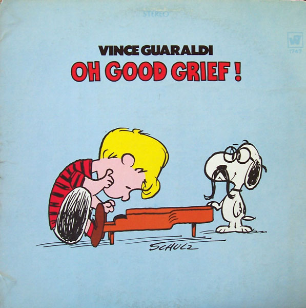

I like the above picture quite a bit. This is the American Analog Set at perhaps the youngest we’ll ever see them, against a hilly backdrop of autumn leaves. It’s probably set somewhere in Texas, where the band is from, but these could be any five kids in most any part of the country. It’s homey. It’s analog.
The band has since linked this photo on their Spotify page with a fall emoji and the Numero Fall/Winter playlist; the band seems to want to lean in a little on this fall aesthetic. Very well, I supposed. From what I had heard of them, namely albums The Golden Band from 1999 and Know By Heart from 2001, they concocted a cozy, fireside atmosphere.
But a dive into their earlier work reveals, well, that same coziness, only this time with a little more experimentation and a willingness to dive into spacey elements. 1996’s The Fun of Watching Fireworks is heavy on the keys, creating a more electronic ambience than the twangy, soft-picked guitars.
This band has an earnest feel, which is what I seem to like about the fall season most. Compared to summer’s exuberance, autumn is a season of internal pursuit, the time when blankets reveal themselves and when cozy atmospherics make themselves comfortable again. In a way, it’s a return to familiar traditions.
One such tradition is the rewatching of the old Peanuts cartoons. Since it was Halloween, I ran through the classic Great Pumpkin TV special and it naturally led me back to Vince Guaraldi, perhaps the most accessible of all the jazz legends.
You talk to the average person on the street and they probably couldn’t hum you Bill Evans or Chick Corea. You might be able to get “So What” out of them, if you’re lucky. But you could probably get the melody to “Linus and Lucy” out of them. Maybe that is the power of Guaraldi, someone who would not stand out amongst these technical titans but could write a popular tune to rival them all. More likely, though, is that Guaraldi is the lucky accompanist to holiday specials that have proved themselves traditions in their own right.
In any case, I took a stroll with a couple of Guaraldi’s Peanuts recordings, Oh, Good Grief! and Jazz Impressions of a Boy Named Charlie Brown. The latter release has an intrguing backstory; the Guaraldi Trio recorded it in 1964 for a documentary which was never released, but was then retained to record for the 1965 special A Charlie Brown Christmas.
I found A Boy Named Charlie Brown to be the more interesting of the two, anyway. This is Guaraldi in a classic mode, where I think his compositions shine best. He is a musician who serves himself better when in the constraint of acoustic instrumentation. Oh, Good Grief, in comparison, can sound dated in going more electric, though sometimes the songs win out anyway, like on “Peppermint Patty”.
And in either case, each are at the very least pleasant albums to listen to and put on as a background to reading. (And what a backlog I’ve gotten myself into on that front!)
Want this in your mailbox? Mailto here, or follow the prompts here.